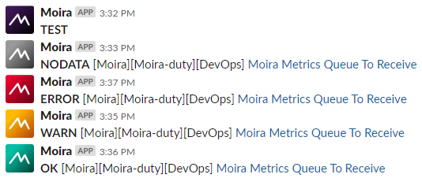
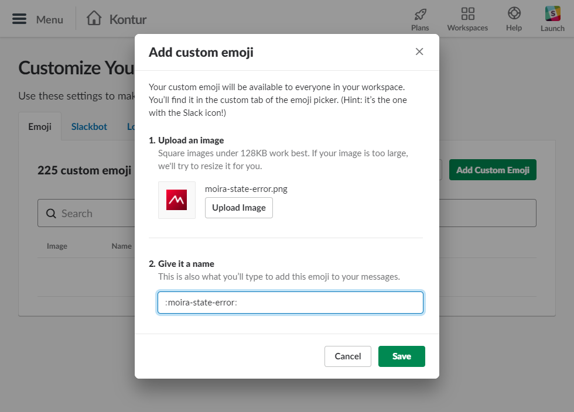

Configuration¶
By default, microservices will look for /etc/moira/<servicename>.yml,
but you can change this location by passing your path as a command-line
parameter --config.
On this page you can find examples of configuration files for Moira microservices.
Filter¶
# Use fields MasterName and SentinelAddrs to enable Redis Sentinel support,
# use Host and Port fields otherwise.
redis:
# Sentinel cluster name
master_name: ""
# Sentinel address list, format: {host1_name:port};{ip:port}
sentinel_addrs: ""
# Node ip-address or host name
host: "moira-redis"
# Node port
port: "6379"
# Database id
dbid: 0
# Redis client connection pool size
connection_limit: 512
graphite:
# If true, graphite sender will be enabled.
enabled: true
# If true, runtime stats will be captured and sent to graphite. Note: It takes to call stoptheworld() with configured "graphite.interval" to capture runtime stats (https://golang.org/src/runtime/mstats.go)
runtime_stats: false
# Graphite relay URI, format: ip:port
uri: "graphite-relay:2003"
# Moira metrics prefix. Use 'prefix: {hostname}' to use hostname autoresolver.
prefix: DevOps.moira
# Metrics sending interval
interval: 60s
filter:
# Metrics listener uri
listen: ":2003"
# Retentions config file path. Simply use your original storage-schemas.conf or create new if you're using Moira without existing Graphite installation.
retention_config: /etc/moira/storage-schemas.conf
# Number of metrics to cache before checking them.
# Note: As this value increases, Redis CPU usage decreases.
# Normally, this value must be an order of magnitude less than graphite.prefix.filter.recevied.matching.count | nonNegativeDerivative() | scaleToSeconds(1)
# For example: with 100 matching metrics, set cache_capacity to 10. With 1000 matching metrics, increase cache_capacity up to 100.
cache_capacity: 10
# Defines number of threads to match incoming graphite-metrics.
# Equals to the number of processor cores found on Moira host by default or when variable is defined as 0.
max_parallel_matches: 0
log:
log_file: stdout
log_level: info
storage-schemas.conf is graphite carbon configuration file that should match similarly-named file in your Graphite installation.
Checker¶
# Use fields MasterName and SentinelAddrs to enable Redis Sentinel support,
# use Host and Port fields otherwise.
redis:
# Sentinel cluster name
master_name: ""
# Sentinel address list, format: {host1_name:port};{ip:port}
sentinel_addrs: ""
# Node ip-address or host name
host: "moira-redis"
# Node port
port: "6379"
# Database id
dbid: 0
# Redis client connection pool size
connection_limit: 512
graphite:
# If true, graphite sender will be enabled.
enabled: true
# If true, runtime stats will be captured and sent to graphite. Note: It takes to call stoptheworld() with configured "graphite.interval" to capture runtime stats (https://golang.org/src/runtime/mstats.go)
runtime_stats: false
# Graphite relay URI, format: ip:port
uri: "graphite-relay:2003"
# Moira metrics prefix. Use 'prefix: {hostname}' to use hostname autoresolver.
prefix: DevOps.moira
# Metrics sending interval
interval: 60s
checker:
# Period for every trigger to perform forced check on
nodata_check_interval: 60s
# Min period to perform triggers re-check. Note: Reducing of this value leads to increasing of CPU and memory usage values
check_interval: 10s
# In Moira 2.4 we add a new entity - Lazy Trigger. This is a regular trigger but without any subscription for it.
# By default Moira treats any trigger equally regardless on its subscriptions number.
# You can change this behaviour using option below. This can reduce CPU usage on your server.
# Lazy triggers checker works if lazy_triggers_check_interval > check_interval. We recommend setting it to 10m.
lazy_triggers_check_interval: 10m
# Time interval to store metrics. Note: Increasing of this value leads to increasing of Redis memory consumption value
metrics_ttl: 3h
# Period for every trigger to cancel forced check (greater than 'NoDataCheckInterval') if no metrics were received
stop_checking_interval: 30s
# Equals to the number of processor cores found on Moira host by default or when variable is defined as 0.
max_parallel_checks: 0
# Is related with remote triggers (see remote section)
# Equals to the number of processor cores found on Moira host by default or when variable is defined as 0.
max_parallel_remote_checks: 0
# This section configures remote triggers Checker.
# See https://moira.readthedocs.io/en/latest/installation/configuration.html#remote-triggers-checker for futher information
remote:
enabled: false
# URL of Graphite HTTP API: graphite-web, carbonapi, etc.
# Specify full URL including '/render'
url: "http://graphite.example.com/render"
# Auth username. Only Basic-auth supported
user: devops
# Auth password. Only Basic-auth supported
password: verySecurePassword
# Min period to perform triggers re-check.
# Note: Reducing of this value leads to increasing of CPU and memory usage values and extra load on Graphite HTTP API
check_interval: 60s
# Maximum timeout for HTTP-request made to Graphite HTTP API
timeout: 60s
log:
log_file: stdout
log_level: info
Remote Triggers Checker¶
One of Moira key feature is Graphite independance. Some Graphite queries are very ineffective. Tools like Seyren multiply this effect every minute making lots of ineffective queries and overloading your cluster. Moira relies on the incoming metric stream, and has its own fast cache for recent data.
Enabling Remote triggers Checker allows user to create triggers that relies on Graphite Storage instead of Redis DB.
Warning
Use this feature with caution, because it can create an extra load on Graphite HTTP API.
Lazy Triggers Checker¶
In Moira 2.4 we add a new entity - Lazy Trigger. This is a regular trigger
but without any subscription for it. By default Moira treats any trigger
equally regardless on its subscriptions number. You can change this behaviour
using lazy_triggers_check_interval option in checker section. This can
reduce CPU usage on your server. Lazy triggers checker works if
lazy_triggers_check_interval > check_interval. We recommend set
it to 10m (10 minutes).
Notifier¶
# Use fields MasterName and SentinelAddrs to enable Redis Sentinel support,
# use Host and Port fields otherwise.
redis:
# Sentinel cluster name
master_name: ""
# Sentinel address list, format: {host1_name:port};{ip:port}
sentinel_addrs: ""
# Node ip-address or host name
host: "moira-redis"
# Node port
port: "6379"
# Database id
dbid: 0
# Redis client connection pool size
connection_limit: 512
graphite:
# If true, graphite sender will be enabled.
enabled: true
# If true, runtime stats will be captured and sent to graphite. Note: It takes to call stoptheworld() with configured "graphite.interval" to capture runtime stats (https://golang.org/src/runtime/mstats.go)
runtime_stats: false
# Graphite relay URI, format: ip:port
uri: "graphite-relay:2003"
# Moira metrics prefix. Use 'prefix: {hostname}' to use hostname autoresolver.
prefix: DevOps.moira
# Metrics sending interval
interval: 60s
notifier:
# Soft timeout to start retrying to send notification after single failed attempt
sender_timeout: 10s
# Hard timeout to stop retrying to send notification after multiple failed attempts
resending_timeout: "1:00"
# Web-UI uri prefix for trigger links in notifications. For example: with 'http://localhost' every notification will contain link like 'http://localhost/trigger/triggerId'
front_uri: "https://moira.example.com"
# Timezone to use to convert ticks. Default is UTC. See https://golang.org/pkg/time/#LoadLocation for more details.
timezone: Europe/Moscow
# Format for email sender. Default is "15:04 02.01.2006". See https://golang.org/pkg/time/#Time.Format for more details about golang time formatting.
date_time_format: "15:04 02.01.2006"
# Amount of messages notifier reads from Redis per iteration, -1 for unlimited
read_batch_size: -1
# List of senders, every element has "type" field (one of ["pushover", "slack", "mail", "telegram", "twilio sms", "twilio voice", "script"])
# Every type of sender has additional config fields
senders:
- type: pushover
# Api token for your pushover channel, for more info see https://pushover.net/api#registration
api_token: ...
- type: slack
# Api token for your moira notifications slack user, for more info see https://get.slack.help/hc/en-us/articles/215770388-Create-and-regenerate-API-tokens
api_token: ...
# If true, notification will be sent with state-specific icon, for more info see https://moira.readthedocs.io/en/latest/installation/configuration.html#slack-icons.
use_emoji: false
- type: telegram
# Api token for your telegram bot, for more info about creating bot and get token see https://core.telegram.org/bots#3-how-do-i-create-a-bot
api_token: ...
- type: mail
mail_from: ...
smtp_host: ...
smtp_port: ...
# Skip SMTP server certificate chain validation if false
insecure_tls: false
# Uses "mail_from" if empty
smtp_user: ...
smtp_pass: ...
# Email template file path (standard Go templates). By default use 'Fancy' template (see screenshot below). If empty, use build-in template with no markups and styles.
template_file: '/etc/moira/fancy-template.html'
- type: twilio voice
api_asid: ...
api_authtoken: ...
api_fromphone: ...
# URL that responds with TwiML config for voice message generation, see https://www.twilio.com/docs/api/twiml/voice-overview
voiceurl: ...
append_message: true
- type: twilio sms
api_asid: ...
api_authtoken: ...
api_fromphone: ...
# Script and webhook senders support additional templated parameters:
# ${contact_id} contact ID
# ${contact_value} contact value (as specified by user via web UI)
# ${contact_type} contact type (as specified in web UI config file)
# ${trigger_id} trigger ID
- type: script
name: ...
# Executable path. File must exist on all machines where notifier is running.
# You can use templated parameters here (see above), they will be replaced with appropriate values.
exec: ...
- type: webhook
name: ...
# URL to send POST request (you can use templated parameters, see above)
url: ...
timeout: ...
# Basic authorization parameters (if required)
user: ...
password: ...
- type: pagerduty
- type: opsgenie
api_key: ...
- type: victorops
routing_url: ...
- type: discord
token: ...
# Self state monitor configuration section. Note: No inner subscriptions is required. Moira will use its notification mechanism to send messages.
moira_selfstate:
enabled: true
# If true, Moira selfstate will check remote triggers checker works properly and notify admin if remote checker fails
# See https://moira.readthedocs.io/en/latest/installation/configuration.html#remote-triggers-checker for futher information
remote_triggers_enabled: false
# Max Redis disconnect delay to send alert when reached
redis_disconect_delay: 60s
# Max Filter metrics receive delay to send alert when reached
last_metric_received_delay: 120s
# Max Checker checks perform delay to send alert when reached
last_check_delay: 120s
# Max Remote triggers Checker checks perform delay to send alert when reached
# See https://moira.readthedocs.io/en/latest/installation/configuration.html#remote-triggers-checker for futher information
last_remote_check_delay: 300s
# Self state monitor alerting interval
notice_interval: 300s
# Contact list for Self state monitor alerts, use this like delivery channels in web-ui
contacts:
- type: mail
value: devopsteam@example.com
log:
log_file: stdout
log_level: info
# This section configures remote triggers Checker.
# See https://moira.readthedocs.io/en/latest/installation/configuration.html#remote-triggers-checker for futher information
remote:
enabled: false
# URL of Graphite HTTP API: graphite-web, carbonapi, etc.
# Specify full URL including '/render'
url: "http://graphite.example.com/render"
# Auth username. Only Basic-auth supported
user: devops
# Auth password. Only Basic-auth supported
password: verySecurePassword
# Min period to perform triggers re-check.
# Note: Reducing of this value leads to increasing of CPU and memory usage values and extra load on Graphite HTTP API
check_interval: 60s
# Maximum timeout for HTTP-request made to Graphite HTTP API
timeout: 60s
Slack icons¶
{kind=link}
By default Slack sender won’t change default icon configured for your bot. To use state-specific icons in notifications:
{kind=link}
Download and unzip notification icons
Add icons from
..icons/slackdirectory as custom emojis according to their filenames to SlackSet
use_emojitotruefor Slack sender section in notifier configuration file
{kind=link}
Self State Monitor¶
If self state monitor is enabled, Moira will periodically check the Redis connection, the number of incoming metrics in the Moira-Filter and the number of triggers to be checked by Moira-Checker.
See Self State Monitor for more details.
API and Web¶
# Use fields MasterName and SentinelAddrs to enable Redis Sentinel support,
# use Host and Port fields otherwise.
redis:
# Sentinel cluster name
master_name: ""
# Sentinel address list, format: {host1_name:port};{ip:port}
sentinel_addrs: ""
# Node ip-address or host name
host: "moira-redis"
# Node port
port: "6379"
# Database id
dbid: 0
# Redis client connection pool size
connection_limit: 512
graphite:
# If true, graphite sender will be enabled.
enabled: true
# If true, runtime stats will be captured and sent to graphite. Note: It takes to call stoptheworld() with configured "graphite.interval" to capture runtime stats (https://golang.org/src/runtime/mstats.go)
runtime_stats: false
# Graphite relay URI, format: ip:port
uri: "graphite-relay:2003"
# Moira metrics prefix. Use 'prefix: {hostname}' to use hostname autoresolver.
prefix: DevOps.moira
# Metrics sending interval
interval: 60s
api:
# Api local network address. Default is ':8081' so api will be available at http://moira.company.com:8081/api
listen: ":8081"
# If true, CORS for cross-domain requests will be enabled. This option can be used only for debugging purposes.
enable_cors: false
# Web_UI config file path. If file not found, api will return 404 in response to "api/config"
web_config_path: "/etc/moira/web.json"
web:
# Moira administrator email address
supportEmail: "devops@example.com"
# List of enabled contact types
contacts:
- type: mail
label: E-mail
validation: "^.+@.+\\..+$"
- type: pushover
label: Pushover
placeholder: "Pushover user key"
- type: slack
label: Slack
validation: "^[@#][a-zA-Z0-9-_]+"
placeholder: "Slack #channel or @user"
- type: telegram
label: Telegram
placeholder: "#channel, @username or group"
help: "### To make things work you should:\n### In personal chat:\n - start conversation with bot [@YourMoiraBot](https://t.me/YourMoiraBot);\n - execute command `/start`;\n - type your login in above field as `@login`.\n\n### In group chat:\n - invite bot [@YourMoiraBot](https://t.me/YourMoiraBot) into chat;\n - execute command `/start@YourMoiraBot`;\n - bot will send you chat name, you should type it without extra characters in above field.\n\n### In channel:\n - add bot [@YourMoiraBot](https://t.me/YourMoiraBot) into channel;\n - promote bot as channel administrator;\n - type channel name in above field as `#channel`.\n"
- type: twilio sms
label: Twilio SMS
validation: "^\\+79\\d{9}$"
placeholder: "Phone number format +79*********"
- type: twilio voice
label: Twilio voice
validation: "^\\+79\\d{9}$"
placeholder: "Phone number format +79*********"
- type: webhook
label: My Webhook
validation: "^(http|https):\\/\\/.*(example.com|example.org)(:[0-9]{2,5})?\\/"
placeholder: "https://example.com/webhooks/moira"
help: "### Domains whitelist:\n - example.com\n - example.org"
- type: pagerduty
label: PagerDuty
placeholder: "Integration key"
- type: opsgenie
label: OpsGenie
placeholder: "Responder Name or ID"
- type: victorops
label: VictorOps
placeholder: "Routing key"
- type: discord
label: Discord
placeholder: "Discord channel (eg: general-text) or user (eg: @user)"
log:
log_file: stdout
log_level: info
# This section configures remote triggers Checker.
# See https://moira.readthedocs.io/en/latest/installation/configuration.html#remote-triggers-checker for futher information
remote:
enabled: false
# URL of Graphite HTTP API: graphite-web, carbonapi, etc.
# Specify full URL including '/render'
url: "http://graphite.example.com/render"
# Auth username. Only Basic-auth supported
user: devops
# Auth password. Only Basic-auth supported
password: verySecurePassword
# Min period to perform triggers re-check.
# Note: Reducing of this value leads to increasing of CPU and memory usage values and extra load on Graphite HTTP API
check_interval: 60s
# Maximum timeout for HTTP-request made to Graphite HTTP API
timeout: 60s
Web contact fields:
type (any uniq string) required — contact type: pushover, slack, mail, script, telegram, twilio sms, twilio voice, etc.;
label required — contact label type. Uses in add/edit contact form in select control;
validation — regular expression for user contact, uses for validation in add/edit contact form;
placeholder — hint shown in input field;
help — help text in Markdown markup;
{kind=link}
Remote API¶
By default, Web uses local API server (both containers are running on the same host). But if you need to reconfigure Web to interact with API running on remote server then simply set container environment variable MOIRA_API_URI equal to required URI:
MOIRA_API_URI: remoteapi.domain:8081